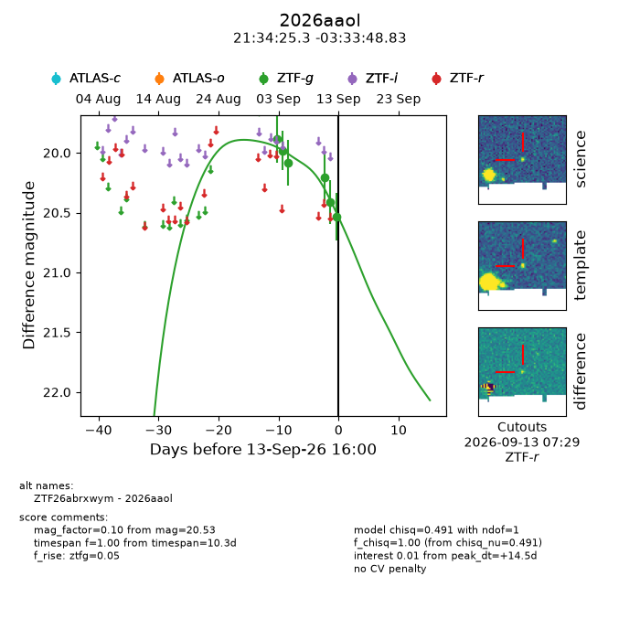
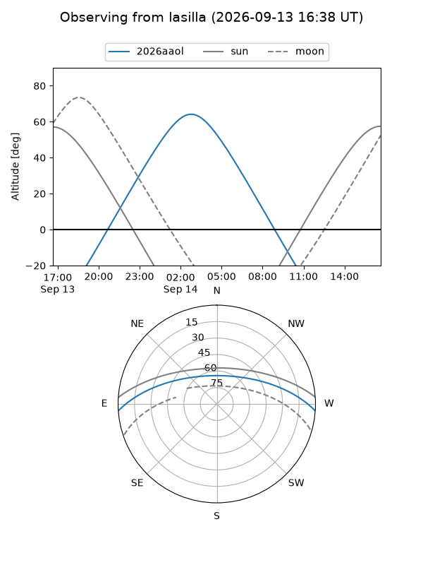
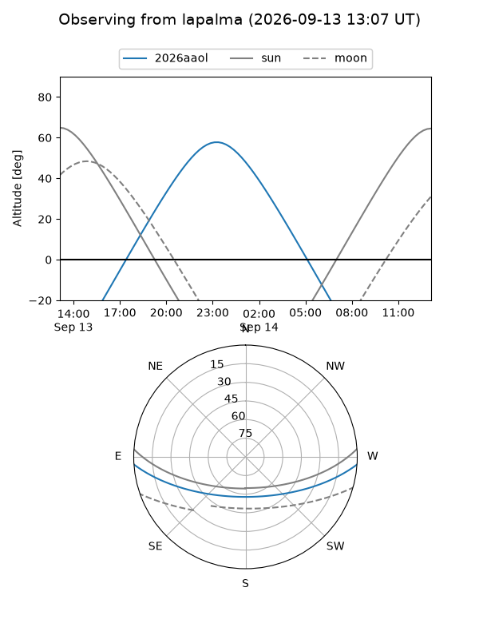
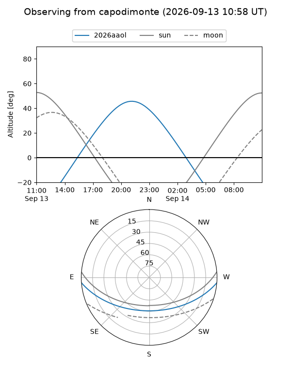
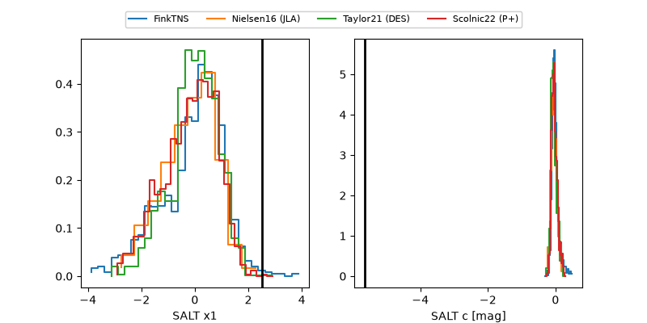

2026aaol
Target 2026aaol at 2026-09-13 16:02
Aliases and brokers:
FINK-ZTF: ztf.fink-portal.org/ZTF26abrxwym
Lasair-ZTF: lasair-ztf.lsst.ac.uk/objects/ZTF26abrxwym
ALeRCE-ZTF: alerce.online/object/ZTF26abrxwym
YSE-PZ: ziggy.ucolick.org/yse/transient_detail/2026aaol
TNS name: wis-tns.org/object/2026aaol
Direct TNS query: direct search
alt names
ZTF26abrxwym (ztf,fink_ztf)
2026aaol (tns,yse)
Coordinates:
equatorial (ra, dec) = 323.6056,-3.56356
equatorial (HMS+DMS) = 21:34:25.35,-03:33:48.83
galactic (l, b) = (50.6604,-37.45381)
Flags:
TNS type: nan
peak dt: +14.5
Photometry:
last ztfg=20.53
6 ztfg detections
Lightcurve

Visibility



Additional plots
